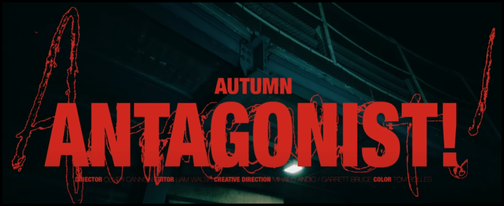

song of the week! (Tucker's choice)
After Autumn! released his album I have really been enjoying it. The album is called Antagonist! 
Antagonist! has 13 songs in total, but my favorite on the album is actually called Antagonist! - Antagonist!
For more up-to-date info on the underground scene follow @insufficientunderground on Instagram.